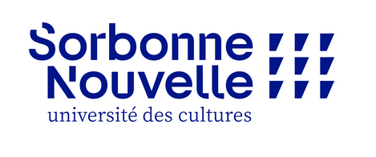

Amayas ACHOUR
Niveau d'étude : M1

A propos de moi
Mon CV des trois dernières années
| Année | CV |
|---|
| 2023-2024 | M2 UMMTO (Algérie) |
| 2022-2023 | M1 UMMTO (Algérie) |
| 2021-2022 | L3 UMMTO (Algérie) |
Voici mes cinq lectures récentes
- Alcools / Guillaume Apollinaire
- Nouvel inventaire des oiseaux de France / Philippe J. Dubois et al.
- L'indispensable guide des oiseaux / Jérôme Morin
- Les fleurs du mal / Charles Baudelaire
- Changing Valency / Alexandra Y. Aikhenvald, R. M. W. Dixon